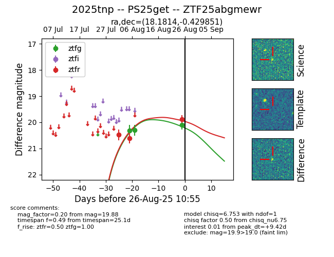

Target 2025tnp at 2025-08-26 12:45, see:
FINK: fink-portal.org/ZTF25abgmewr
Lasair: lasair-ztf.lsst.ac.uk/objects/ZTF25abgmewr
ALeRCE: alerce.online/object/ZTF25abgmewr
TNS: wis-tns.org/object/2025tnp
YSE: ziggy.ucolick.org/yse/transient_detail/2025tnp
alt names
ZTF25abgmewr (ztf,fink)
2025tnp (tns,yse)
PS25get (panstarrs)
coordinates:
equatorial (ra, dec) = (18.1814,-0.42985)
galactic (l, b) = (134.6457,-62.81644)
photometry
last ps1::w=20.12, ztfg=20.11, ztfr=19.88
4 ps1::w, 3 ztfg, 3 ztfr detections
